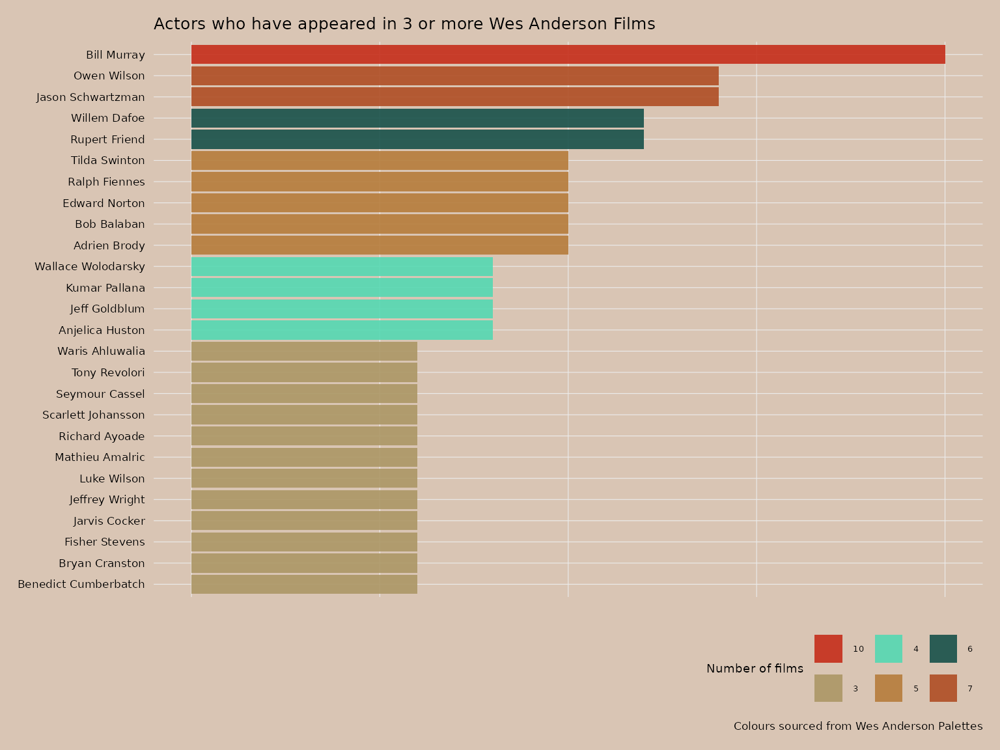
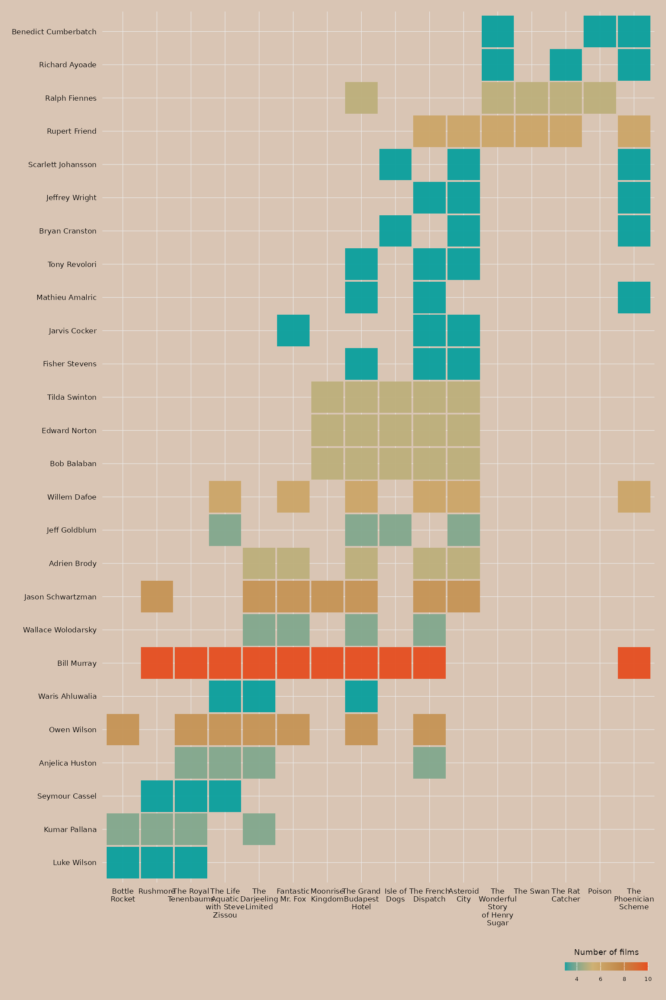

library(wesanderson)
library(ggplot2)
library(wesandersoncast)
library(tidyverse)
#> ── Attaching core tidyverse packages ──────────────────────── tidyverse 2.0.0 ──
#> ✔ dplyr 1.1.4 ✔ readr 2.1.5
#> ✔ forcats 1.0.0 ✔ stringr 1.5.1
#> ✔ lubridate 1.9.4 ✔ tibble 3.2.1
#> ✔ purrr 1.0.4 ✔ tidyr 1.3.1
#> ── Conflicts ────────────────────────────────────────── tidyverse_conflicts() ──
#> ✖ dplyr::filter() masks stats::filter()
#> ✖ dplyr::lag() masks stats::lag()
#> ℹ Use the conflicted package (<http://conflicted.r-lib.org/>) to force all conflicts to become errors
film_count <- wes_actors |>
group_by(actor) |>
tally() |>
filter(n>2) |>
arrange(desc(n))
wes_theme <- theme(
text = element_text(family = "Futura", size = 8, colour = "black"),
axis.text.y = element_text(colour = "black"),
axis.text.x = element_blank(),
axis.title = element_blank(),
legend.position = "bottom",
legend.justification = "right",
legend.direction = "horizontal",
legend.box.margin = margin(t = 2),
legend.spacing = unit(2, "pt"),
plot.margin = margin(t = 10, r = 10, b = 10, l = 10),
legend.title = element_text(size = 7),
legend.text = element_text(size = 5),
plot.background = element_rect(fill = "#D9C5B4", color = NA),
panel.background = element_rect(fill = "#D9C5B4", color = NA),
panel.grid.major = element_line(linewidth = 0.2),
panel.grid.minor = element_blank()
)
ggplot(film_count, aes(n, fct_reorder(actor, n))) +
geom_col(aes(fill=as.character(n)), alpha=.9) +
labs(title = "Actors who have appeared in 3 or more Wes Anderson Films")+
scale_fill_manual(values = wes_palette("AsteroidCity2", n = 6))+
theme_minimal() +
wes_theme+
labs(fill="Number of films", caption= "Colours sourced from Wes Anderson Palettes")
wes_reorder_pal <- c("#0A9F9D","#CEB175","#C18748","#E54E21")
#creates sorting variable for factor
film_order <- wes_actors |>
ungroup() |>
distinct(film, release_date) |>
arrange(release_date) |>
pull(film)
#wraps text
film_order_wrapped <- str_wrap(film_order, width = 10)
arranged_data <- wes_actors |>
mutate(
film_wrapped = factor(str_wrap(film, width = 10), levels = film_order_wrapped)
) |>
group_by(actor) |>
add_count() |>
filter(n > 2) |>
ungroup() |>
mutate(actor = fct_reorder(actor, release_date))
wes_theme_2 <- theme(
text = element_text(family = "Futura", size = 8, colour = "black"),
axis.text = element_text(colour = "black"),
axis.title = element_blank(),
legend.position = "bottom",
legend.justification = "right",
legend.direction = "horizontal",
legend.box.margin = margin(t = 2),
legend.spacing = unit(2, "pt"),
plot.margin = margin(t = 10, r = 10, b = 10, l = 10),
legend.title = element_text(size = 7),
legend.text = element_text(size = 5),
plot.background = element_rect(fill = "#D9C5B4", color = NA),
panel.background = element_rect(fill = "#D9C5B4", color = NA),
panel.grid = element_line(linewidth = 0.2)
)
ggplot(arranged_data, aes(film_wrapped, actor, fill=n))+
geom_tile(alpha=.95, width = 0.95, height = 0.95)+
theme_minimal()+
scale_fill_gradientn(colours = wes_reorder_pal)+
wes_theme_2+
labs(fill="Number of films")+
guides(
fill = guide_colorbar(
barheight = 0.5,
barwidth = 5,
title.position = "top",
title.hjust = 0.5
))